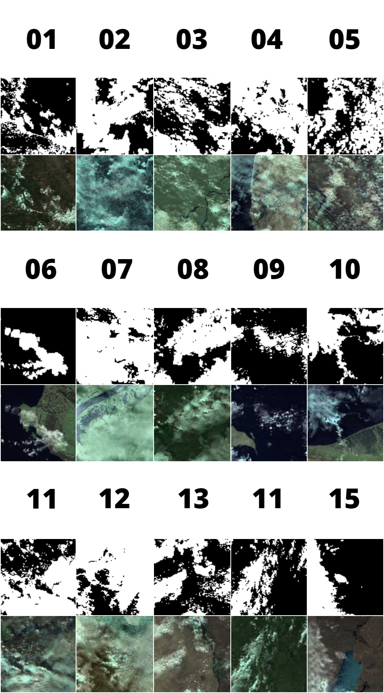
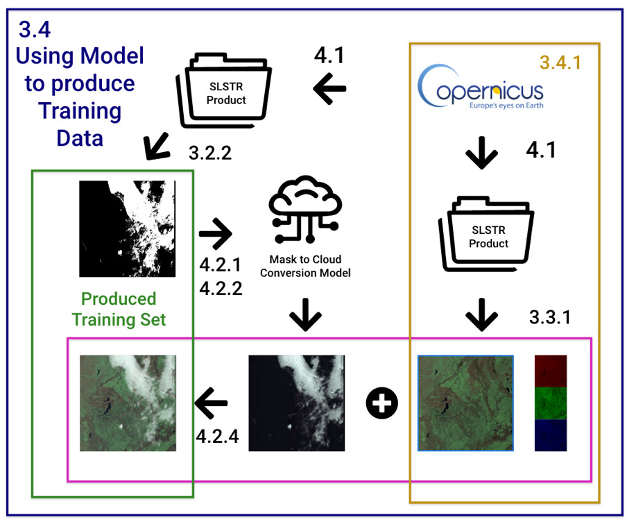
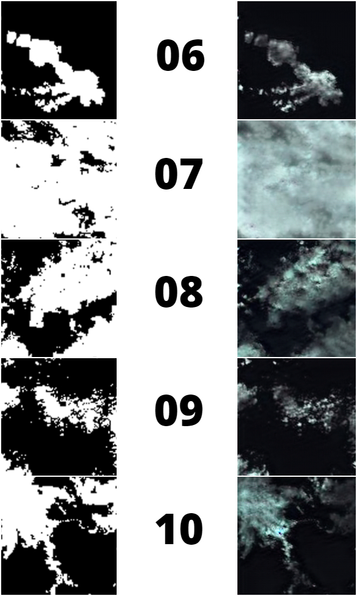
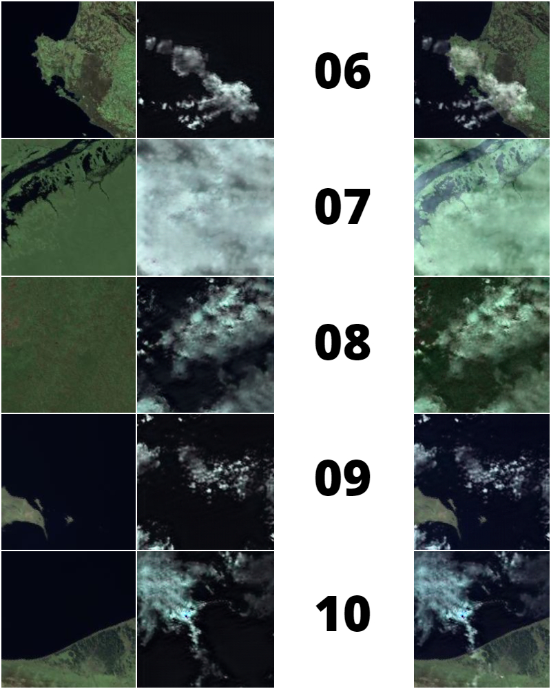

Paired Training Data Generator for Cloud Masking AI.
The application uses a pre-trained CycleGAN model which converts cloud masks into cloud images. It allows for the creation of cloud masking training data with accurate masks, using artificial cloudy images produced from existing masks.
.env file, and fill out copernicus credentialsapplication.py with Python 3.8 or higheroutput
foldercolab.ipynb notebook in Google ColabGPUoutput folderThe application will run through the entire workflow automatically, but each step is described below.
Running application.py will installed the required dependencies automatically using
pip.
To do this manually, run pip install -r src/requirements.txt in the terminal.
The application script will then generate the necessary files and directories for it to function. This is compulsory.
To do this manually, run the Setup cell in the colab.ipynb notebook.
The application will then prompt to download cloudy Sentinel-3 SLSTR Products to extract cloud masks. These cloud
masks are one domain of the training set, and they will be used to generate artificially cloudy images for the
second domain. Enter the number of products you want to download, and press Enter. The number of
images generated per product varies a lot, but each product generally produces around 50 usable
images and masks.
To do this manually, run in the terminal:
python3 src/search_for_cloudy.py --productCount <replace with desired number of products>
python3 src/copernicus_download.py
In Colab, run the Download Products cell, entering in the number of desired products.
It’s important to ensure that valid copernicus credentials have been entered into the .env
files as these are required to authenticate the acquisition of the products.
If you have your own products, you can place the .zip files in the
userdata/product_store folder and skip this step.
The application will then proceed to unpack the products, and extract cloud masks from them. The cloud masks will be sliced into small tiles, and sorted by cloud cover. The chosen masks are then ready to be transformed in the model.
To do this manually, run in the terminal:
python3 src/unzip_images.py
python3 src/build_rgb_images.py
python3 src/build_mask_images.py
python3 src/slice_images.py
python3 src/sort_tiles.py
python3 src/prep_cyclegan.py
In Colab, run the Process Inputs cell.
The application will then a bundled custom distribution of CycleGAN to transform the mask images into clouds, using a bundled model. This can take a lot of time, depending on hardware.
The application runs CycleGAN in CPU mode by default for compatibility. To use a GPU, replace
--gpu_ids -1 with --gpu_ids 0 in src/run_cyclegan.py. The -1
should be replaced with 0 or the number of the desired GPU. The GPU must be nVidia have Cuda
Drivers installed, and configured with pytorch.
To run this manually in CPU mode:
python3 ./src/cyclegan/test.py --dataroot ./userdata/cyclegan_input --name mask-cloud-networks --model cycle_gan --checkpoints_dir ./data --results_dir ./userdata/cyclegan_output --num_test 3500 --load_size 200 --crop_size 200 --gpu_ids -1
python3 src/finish_cyclegan.py
To run this manually in GPU mode:
python3 ./src/cyclegan/test.py --dataroot ./userdata/cyclegan_input --name mask-cloud-networks --model cycle_gan --checkpoints_dir ./data --results_dir ./userdata/cyclegan_output --num_test 3500 --load_size 200 --crop_size 200
python3 src/finish_cyclegan.py
In Colab, run the Run CycleGAN cell of your choice.
The application will then overlay the artificially generated clouds over a cloud-free land/sea surface image tile, to create a fake cloudy satellite image. The cloudless images come from a bundled dataset of manually verified cloud-free surface false color images.
To do this manually, run in the terminal:
python3 src/overlay_clouds.py
The process is now complete, and the generated training set can be found in the output folder. The
images folder contains artificial cloudy images and masks folder contains matching
accurate cloud masks from which the cloudy images were formed. The two sets can be used as a paired training set
to enhance existing Cloud Masking AI. The application will create a training_set.zip archive in the
output folder for quick download and distribution.
To do this manually, run the python code:
shutil.make_archive('./output/training-set', 'zip', './output')
In Colab, run the Compress Output for Download cell. Run the appropriate additional cells in Colab
if you wish to transfer the output to Google Drive.
The application is arranged with a file structure that supports adaptability and modification.
The data folder contains static data that ships with the application. This includes the trained
neural network, a zip of the cloudless dataset which is extracted when the application runs, and a
values.py folder for setting options. If the model is improved, or the cloudless set extended,
these can be easily replaced in this folder.
The src folder contains the custom scripts for the application, and a custom distribution of the
cyclegan code.
The .env file should be edited and filled out with copernicus credentials to authenticate product
search and downloads.
The colab.ipynb file contains a Colab notebook for running the application on Colab. This allows for
faster results for large scale production using a GPU.
During execution a userdata folder is created for storing temporary files and values. Products are
downloaded and extracted into the product_store folder, and manually downloaded products can be
placed here to be used. The rgb_store and mask_store folders are used to store false
color images, masks and their respective sorted tiles. Datasets are transferred to the
cyclegan_input folder, and the artificial clouds are retrieved from the
cyclegan_output folder once finished. There are also text files to store temporary lists.
An output folder is also generated after execution. This contains the produced training set for the
cloud masking AI. The masks folder contains the cloud masks which were used to produce the
identically numbered artificial cloudy pictures in the images folder The raw artificial clouds and
surface images are also provided in case they are required.
The bundled model was trained on CycleGAN with real SLSTR Cloud Masks and Cloudy Ocean Images. The product
manifest files for the products used for training the model can be found in the output folder.
The model was trained with 1000 tiles for 200 epochs.
The cloud masks used in this application are obtained free of charge from Copernicus Open Access Hub. They are extracted out of Level 1 Products from the SLSTR Instrument on the Sentinel-3 Satellites.
The application integrates two existing projects into its workflow:
Pix2Pix CycleGAN - A Cyclic
Generative Adversarial Network for bi-directional Image to Image Transformation. A customized
distribution of CycleGAN is provided in src.cyclegan. License for CycleGAN can be found in
src/cyclegan/LICENSE.
SLSTR Tools - A collection of Python scripts
to load the raw SLSTR product data into programmable data structures, like arrays. The
ImageLoader class from SLSTR Tools is located in src/image.py.